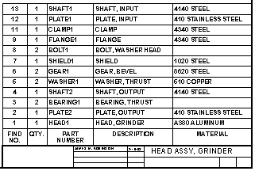
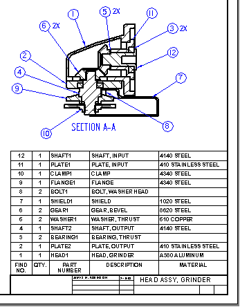

Item numbers in parts lists
You can include an Item Number column in the parts list, and show the part and subassembly item numbers that are used by the assembly. Item numbers are assigned in the assembly document using the Item Numbers tab (Solid Edge Options dialog box).
-
To use these item numbers in parts lists, you must select the Use assembly generated item numbers check box on the Options tab (Parts List Properties dialog box.
-
Alternatively, you can leave this option unchecked and have the Parts List command generate item numbers on the fly. You also can choose to use flat list item numbers or level based item numbers when you create an exploded parts list.
To learn more about item numbers, see the following Help topics:
Items without balloons (*)
An item number in the parts list that is marked by an asterisk indicates that no balloon was created automatically for it on the drawing. Items without balloons are controlled by options on the Parts List Properties dialog box:
-
On the Options tab, you can select the Mark Un-ballooned Items check box and specify one or more characters to display after the item number in the parts list.
Example:You can change the default single asterisk marker (*) to a double asterisk (**).
-
On the Balloon tab, you can use the Auto-Balloon options to control how many (or how few) duplicate balloons are created.
An item number balloon that displays NA represents a part that has been excluded using List Control.
Renumbering parts lists
When you delete parts in an assembly and then update the parts list, the parts list is not automatically renumbered. For example, if you delete part number 10, the parts list will skip that number.

You can renumber a parts list using the Sorting tab on the Parts List Properties dialog box. If you used automatic ballooning when you created the parts list, renumbering the list also renumbers the balloons.
The balloons for the deleted parts are not automatically deleted, but you can delete them manually.

How do I
Create a parts listCreate a subassembly parts list
Create an exploded parts list
Create a total length parts list
Create a parts list for flexible hoses and tubing
Create a family of assemblies parts list
Exclude parts from an exploded parts list
Open a model from a parts list
Example: Show custom occurrence properties in a parts list
Example: Show custom properties and materials in a parts list
Example: Show sheet metal material thickness in a parts list
Renumber a parts list
Change the active parts list
Display assembly occurrences in a drawing view or parts list
Convert a parts list to a table
Copy a parts list to the clipboard
Learn more
Parts listsFamily of Assemblies (FOA) parts lists
Assembly part views and parts lists
Subassembly drawing views and parts lists
Exploded parts lists
Custom occurrence properties in parts lists
Occurrence quantity overrides in parts lists
Saving and reusing the parts list format
Look up more details
Parts List commandParts List command bar
Parts List Properties dialog box
Copy Contents command
Convert To Table command